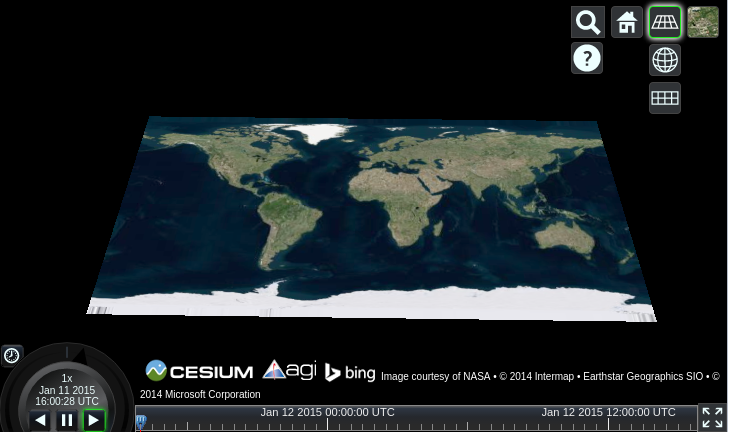

Cesium Quickstart¶
Cesium ist eine JavaScript Bibliothek zur Erstellung von 3D Globen und 2D Karten im Browser ohne jegliche Plugins. Cesium verwendet WebGL für Hardware beschleunigte Graphiken. Es ist plattformunabhängig, browserunabhängig und ist für die dynamische zeitabhängige Datenvisualisierung optimiert.
Dieses Dokument zeigt, wie Cesium mit dem 3D (Globus), 2.5D (Columbus View) und 2D (Karte) verwendet wird.
Cesium starten¶
Öffnen Sie den Browser und geben Sie die folgende Adresse ein http://localhost/cesium/Apps/HelloWorld.html
Ortssuche¶
Klicken Sie auf die Lupe und geben Sie den gesuchten Ort ein. In der folgenden Anzeige suchen wir nach Indien.

Wechsel zwischen 3D, 2.5D und 2D¶
Sie können auf den Button mit dem Globus klicken, um in eine andere Ansicht zu wechseln. Auf dem folgenden Bild wurde die 2.5D Columbus Ansicht ausgewählt.
{kind=link}
Nun wurde die 2D Karte ausgewählt.

Auswahl der Kartenebene¶
Über den Button ganz rechts kann der Kartendienst ausgewählt werden, der angezeigt werden soll. Im Beispiel wurde Natural Earth II ausgewählt und Sie können sehen, wie sich das Kartenbild verändert.

Was kommt als nächstes?¶
Sehen Sie sich unsere Video Tutorials an.
Sehen Sie sich unsere Tutorials an.
Sie können schnell Anwendungen mit der sandcastle Webseite entwickeln. Sandcastle ist in der Regel eine der besten Möglichkeiten, um mehr über Cesium zu erfahren und alle Codebeispiele sind hierfür nützlich.
The Cesium Forum is a great place to search for answers to common questions, and to raise questions that haven’t been asked before.
Eine ausführliche Dokumentation finden Sie lokal vorinstalliert.